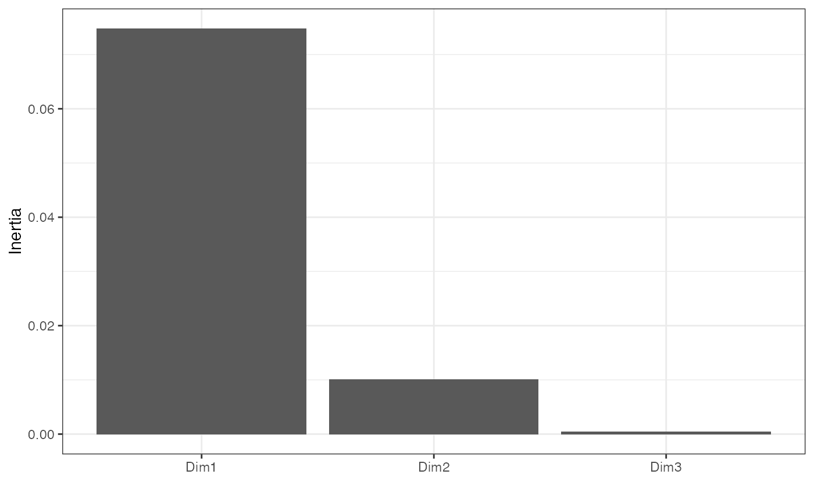
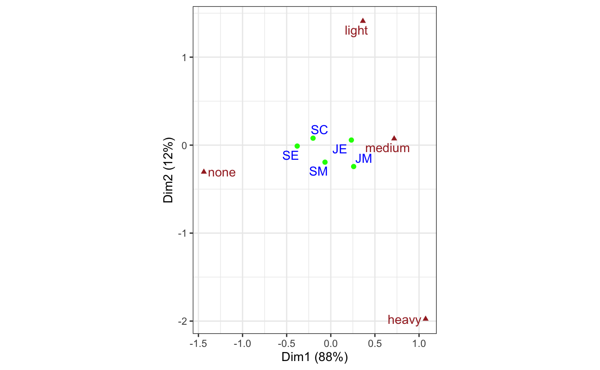
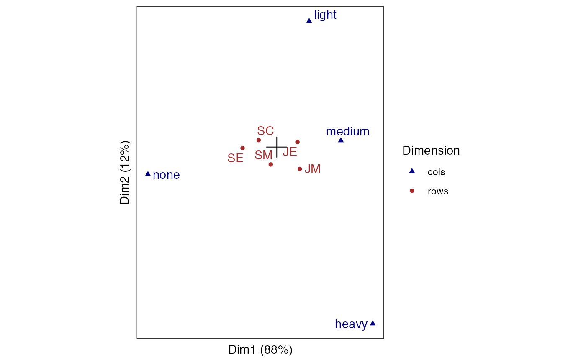

methods-ca.RdThese methods extract data from, and attribute new data to,
objects of class "ca" from the ca package.
# S3 method for ca as_tbl_ord(x) # S3 method for ca recover_rows(x) # S3 method for ca recover_cols(x) # S3 method for ca recover_inertia(x) # S3 method for ca recover_conference(x) # S3 method for ca recover_coord(x) # S3 method for ca augmentation_rows(x) # S3 method for ca augmentation_cols(x) # S3 method for ca augmentation_coord(x)
| x | An ordination object. |
|---|
#> [1] "table"#> Brown Blue Hazel Green #> Black 68 20 15 5 #> Brown 119 84 54 29 #> Red 26 17 14 14 #> Blond 7 94 10 16# use correspondence analysis to construct row and column profiles haireye %>% ca::ca() %>% as_tbl_ord() %>% print() -> haireye_ca#> # A tbl_ord of class 'ca': (4 x 3) x (4 x 3)' #> # 3 coordinates: Dim1, Dim2, Dim3 #> # #> # Rows (standard): [ 4 x 3 | 0 ] #> Dim1 Dim2 Dim3 | #> | #> 1 -1.10 1.44 -1.09 | #> 2 -0.324 -0.219 0.957 | #> 3 -0.283 -2.14 -1.63 | #> 4 1.83 0.467 -0.318 | #> # #> # Columns (standard): [ 4 x 3 | 0 ] #> Dim1 Dim2 Dim3 | #> | #> 1 -1.08 0.592 -0.424 | #> 2 1.20 0.556 0.0924 | #> 3 -0.465 -1.12 1.97 | #> 4 0.354 -2.27 -1.72 |#> # A tibble: 1 x 7 #> rank n.row n.col inertia prop.var.1 prop.var.2 class #> <int> <int> <int> <dbl> <dbl> <dbl> <chr> #> 1 3 4 3 0.234 0.894 0.0951 ca#> Dim1 Dim2 Dim3 #> Black -1.1042772 1.4409170 -1.0889497 #> Brown -0.3244635 -0.2191109 0.9574152 #> Red -0.2834725 -2.1440145 -1.6312184 #> Blond 1.8282287 0.4667063 -0.3180920#> Dim1 Dim2 Dim3 #> Brown -1.0771283 0.5924202 -0.42395984 #> Blue 1.1980612 0.5564193 0.09238682 #> Hazel -0.4652862 -1.1227826 1.97191769 #> Green 0.3540108 -2.2741218 -1.71844295# augment profiles with names, masses, distances, and inertias (haireye_ca <- augment_ord(haireye_ca))#> # A tbl_ord of class 'ca': (4 x 3) x (4 x 3)' #> # 3 coordinates: Dim1, Dim2, Dim3 #> # #> # Rows (standard): [ 4 x 3 | 4 ] #> Dim1 Dim2 Dim3 | .name .mass .dist .inertia #> | <chr> <dbl> <dbl> <dbl> #> 1 -1.10 1.44 -1.09 | 1 Black 0.182 0.551 0.0554 #> 2 -0.324 -0.219 0.957 | 2 Brown 0.483 0.159 0.0123 #> 3 -0.283 -2.14 -1.63 | 3 Red 0.120 0.355 0.0151 #> 4 1.83 0.467 -0.318 | 4 Blond 0.215 0.838 0.151 #> # #> # Columns (standard): [ 4 x 3 | 4 ] #> Dim1 Dim2 Dim3 | .name .mass .dist .inertia #> | <chr> <dbl> <dbl> <dbl> #> 1 -1.08 0.592 -0.424 | 1 Brown 0.372 0.500 0.0931 #> 2 1.20 0.556 0.0924 | 2 Blue 0.363 0.554 0.111 #> 3 -0.465 -1.12 1.97 | 3 Hazel 0.157 0.289 0.0131 #> 4 0.354 -2.27 -1.72 | 4 Green 0.108 0.386 0.0161#> # A tibble: 3 x 4 #> .name .sv .inertia .prop_var #> <fct> <dbl> <dbl> <dbl> #> 1 Dim1 0.457 0.209 0.894 #> 2 Dim2 0.149 0.0222 0.0951 #> 3 Dim3 0.0510 0.00260 0.0111# scree plot of inertia tidy(haireye_ca) %>% ggplot(aes(x = .name, y = .inertia)) + theme_bw() + geom_col() + labs(x = "", y = "Inertia")# fortification adds all above columns fortify(haireye_ca)#> # A tibble: 8 x 8 #> Dim1 Dim2 Dim3 .name .mass .dist .inertia .matrix #> <dbl> <dbl> <dbl> <chr> <dbl> <dbl> <dbl> <chr> #> 1 -1.10 1.44 -1.09 Black 0.182 0.551 0.0554 rows #> 2 -0.324 -0.219 0.957 Brown 0.483 0.159 0.0123 rows #> 3 -0.283 -2.14 -1.63 Red 0.120 0.355 0.0151 rows #> 4 1.83 0.467 -0.318 Blond 0.215 0.838 0.151 rows #> 5 -1.08 0.592 -0.424 Brown 0.372 0.500 0.0931 cols #> 6 1.20 0.556 0.0924 Blue 0.363 0.554 0.111 cols #> 7 -0.465 -1.12 1.97 Hazel 0.157 0.289 0.0131 cols #> 8 0.354 -2.27 -1.72 Green 0.108 0.386 0.0161 cols# symmetric biplot haireye_ca %>% confer_inertia("symmetric") %>% ggbiplot(aes(label = .name, color = .matrix, shape = .matrix)) + scale_color_manual(values = c("navyblue", "brown")) + scale_shape_manual(values = c(17L, 16L)) + theme_bw() + theme_biplot() + geom_origin() + geom_rows_point(aes(size = .inertia)) + geom_rows_text_repel(show.legend = FALSE) + geom_cols_point(aes(size = .inertia)) + geom_cols_text_repel(show.legend = FALSE) + scale_size_area() + labs(color = "Dimension", shape = "Dimension", size = "Inertia")# symmetric map biplot (both dimensions in principal coordinates) haireye_ca %>% confer_inertia(c(1, 1)) %>% ggbiplot(aes(label = .name, color = .matrix, shape = .matrix)) + scale_color_manual(values = c("navyblue", "brown")) + scale_shape_manual(values = c(17L, 16L)) + theme_bw() + theme_biplot() + geom_origin() + geom_rows_point(aes(size = .inertia)) + geom_rows_text_repel(show.legend = FALSE) + geom_cols_point(aes(size = .inertia)) + geom_cols_text_repel(show.legend = FALSE) + scale_size_area() + labs(color = "Dimension", shape = "Dimension", size = "Inertia")#> Warning: Inertia is not balanced.